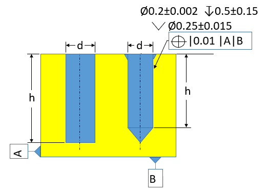
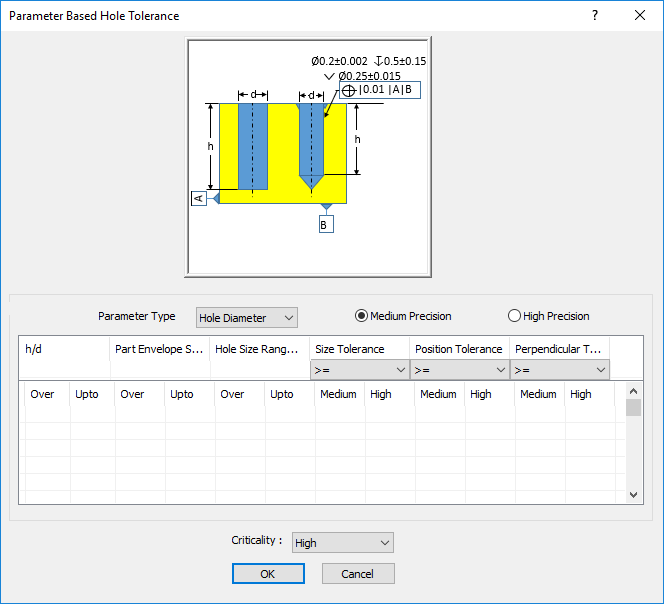

穴の公差は、容易に達成できるよう、推奨値に従う必要があります。
厳しすぎる公差は製造コストを増加させ、生産性を低下させます。製造効率を向上させ、かつ機能的に許容可能な公差を指定する必要があります。
過度に厳しい公差はコスト増加と生産性低下を招きます。適切な公差を持つ部品は、優れた嵌合性と機能性を備え、製造効率も向上します。
推奨される穴のサイズ公差は穴径に依存し、穴径が大きくなるにつれて増加します。デフォルト構成では標準的な公差が示され、機能要件によってより高い、または低い精度が求められる場合を除き、すべてのケースに適用されます。
DFMPro は CAD モデルから該当する穴を識別し、関連する寸法／幾何公差を読み取り、構成された値と照合して検証します。
ルール構成では、穴の深さと直径の比、部品エンベロープサイズおよび直径範囲を考慮して、許容公差値（中公差／精密公差）を設定できます。これらの入力に基づき、穴の公差が構成値に対して検証されます。
部品エンベロープサイズ = 部品の概算最大対角長
部品バウンディングボックスの対角長
ここでは、
Lt = 長さ
Wt = 幅
Ht = 高さ
Ldt = 部品対角長

ここでは、
d = 穴径
h = 穴深さ
注記:
パラメータタイプが 穴径 の場合 ― すべてのフィールドが必須です。
パラメータタイプが 穴深さ の場合 ― 部品エンベロープサイズ、穴サイズ範囲、およびサイズ公差のフィールドが必須です。
パラメータタイプが ドリル深さ の場合 ― サイズ公差のみが必須です。
